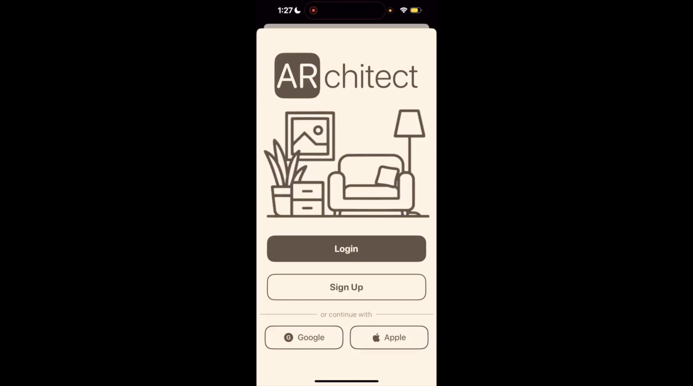
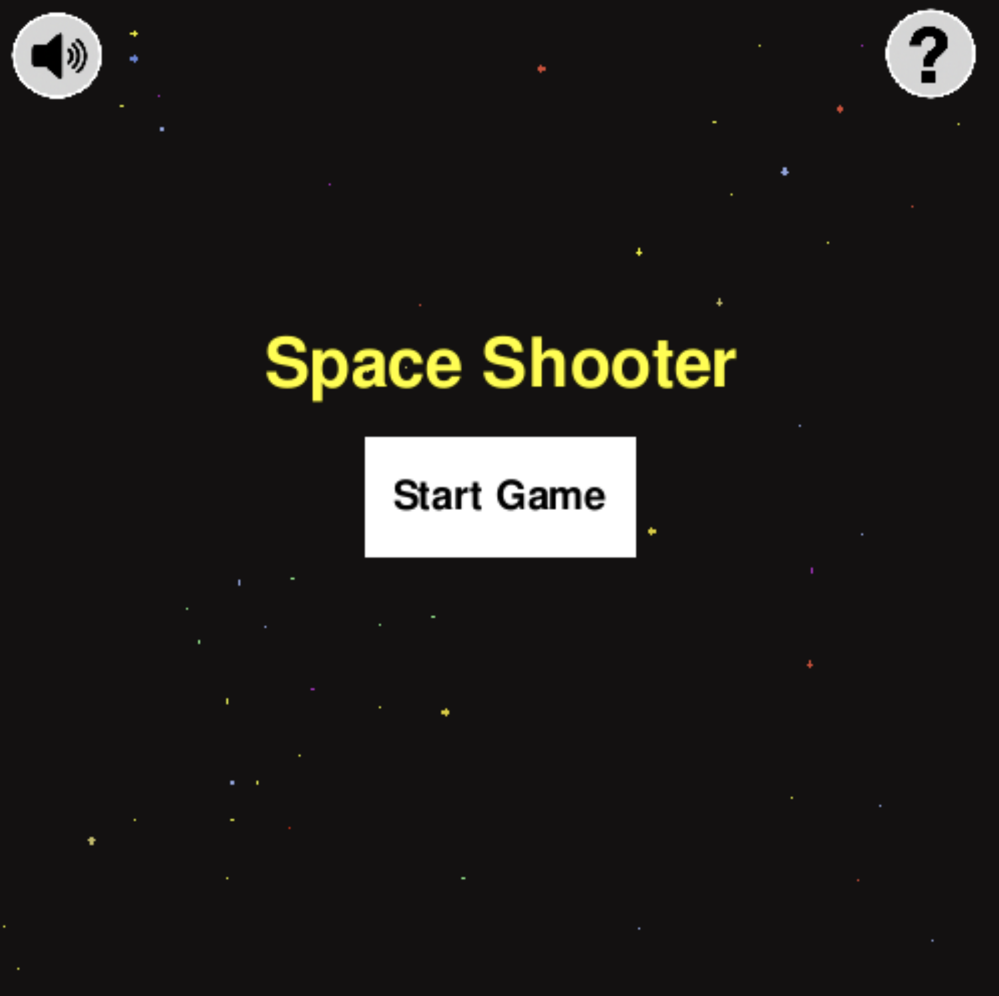
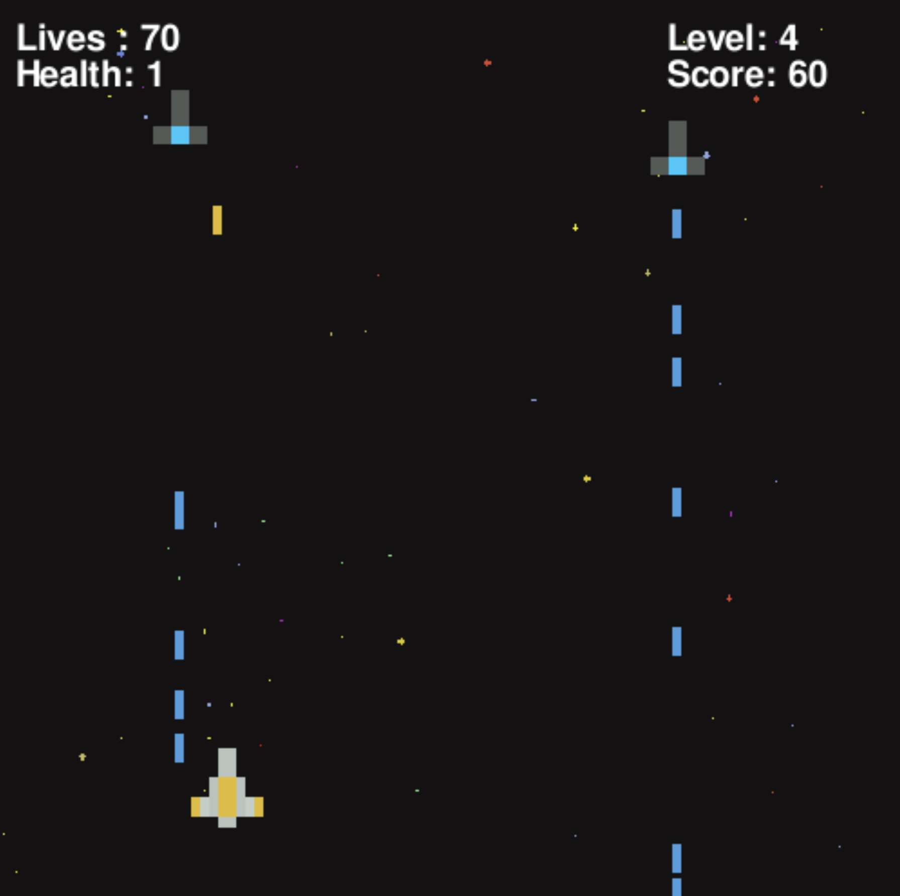

Power Train Engineer - Georgia Tech Solar Racing
August 2025 – Present
As a Powertrain Engineer on Georgia Tech Solar Racing, a student-led team that designs, builds, and races solar-powered vehicles in international collegiate competitions, I design and iterate on PCBs using KiCad. My work includes the Breakout Board and the Motor-Sense (MIBIB) board, where I produced schematics, layouts, and bills of materials. On the MIBIB redesign specifically, I reduced the board area by approximately 7% while upgrading all components to in-stock parts and modernizing the layout from Eagle to KiCad.
Beyond PCB work, I validate critical vehicle signals including CAN bus, Hall-effect sensors, and temperature sensors, and developed a structured electrical testing plan covering continuity, connector integrity, and isolation checks to ensure reliable motor operation. I also developed embedded C firmware using circular buffers and moving-average filtering to smooth accelerator pedal input, tuning window size and filter weights to balance responsiveness and stability, validated through on-vehicle flashing and live pedal testing.
Subteam Research Lead - AquaBots, Georgia Tech Vertically Integrated Projects
January 2025 – Present
As Subteam Research Lead on the Prince William Sound Salmon Computer Vision team within Georgia Tech's AquaBots Vertically Integrated Project, I lead research into deep learning models for tracking marine life through image processing. I upgraded the fish-scale image classifier from AlexNet to EfficientNetV2-M in PyTorch, improving test accuracy from 47% to 92.28% through selective layer fine-tuning and optimized training configurations, with the model deployed on Georgia Tech's PACE ICE cluster.
I also reduced model size by approximately 18%, going from 66M to 54M parameters, by migrating from EfficientNet-B7 to EfficientNetV2-M, balancing computational efficiency with classification performance. On the data side, I built end-to-end preprocessing and training pipelines, converting ZED stereo footage into depth-augmented datasets and evaluating performance using standard classification metrics to guide iterative improvements. I am also investigating soft labeling and fuzzy logic approaches to better model the inherent uncertainty in fish-scale age labeling.
Software Developer - ARchitect, Georgia Tech IOS Club
January 2025 – May 2025
At Georgia Tech's iOS Club, I worked on ARchitect, a social media and interior design app blending augmented reality with a Pinterest and Instagram-style feed. I built dynamic 3D furniture visualizations with gesture-driven rotation, drag, and scaling using RealityKit, SwiftUI, and RealityComposer Pro, optimizing rendering performance with Instruments and GCD for smooth immersive experiences.
I collaborated closely with UI/UX designers to integrate AR interactions with a social feed, including spatial commenting with AR-pinned annotations across volumetric visionOS windows. At the end of the semester, ARchitect was showcased at the iOS Club's biannual demo event, where it won the Most Popular App Award by public vote.

Software Intern - eBest Mobile
June - August 2025
As a Software Intern at eBest Mobile, a Bengaluru-based mobile technology company specializing in sales force automation and retail execution systems for FMCG and CPG brands, I built a production-ready FMCG mobile application using Ionic and Angular. I implemented core features including user authentication, a product catalog, a shopping cart, and an order history page, covering the complete customer journey from browsing to post-purchase. I also engineered responsive UI components and intuitive navigation to ensure a smooth, consistent experience across devices. Working alongside senior software developers, I gained end-to-end exposure to professional mobile development workflows, from initial design and implementation through testing and deployment.
Web Developer - Kickback
October 2025 - December 2025
At Kickback, a startup building a social platform to help Gen Z turn bucket-list ideas into real-world experiences, I collaborated on the design and development of a full-stack platform built with React and Node.js/Express, focused on event discovery and real-life connection. I worked on front-end and UI design to create responsive, user-friendly interfaces that matched Kickback's minimalist, community-focused aesthetic. I also prototyped an AI-powered recommendation engine using OpenAI APIs to surface personalized activity suggestions based on user interests.
Software Engineering Intern - Line Vietnam
June 2023
At Line Vietnam's development center in Ho Chi Minh City, the team responsible for maintaining and creating applications on the Line core platform, I joined three other interns to review, debug, and optimize Java-based production projects to meet company engineering standards and improve functionality. Working directly with production-level codebases taught me how to reason about large, unfamiliar systems quickly and make targeted improvements without introducing regressions. I also gained hands-on experience with the Scrum agile framework, participating in sprint ceremonies and backend team meetings where I contributed insights while deepening my understanding of how senior engineers approach technical decision-making at scale.
Software Apprentice - VNG Vietnam
March - May 2023
At VNG Vietnam, I completed the VNG Junior Development Program as an apprentice under the direct mentorship of a Senior Software Engineer at ZingPlay Game Studios. The program provided a structured introduction to backend game development using Python, with a strong emphasis on scalability, performance, and clean software design. To apply everything I learned, I independently designed and built a Space Shooter game, demonstrating my understanding of core game mechanics, coding principles, and backend architecture. This experience was foundational in shaping how I approach software problems with an eye toward both correctness and craft.

F1 Fantasy Analytics System
March 2025 - Present
The F1 Fantasy Analytics System is a data-driven tool I built to evaluate and score user-created Formula 1 fantasy teams using five years of historical race, driver, and constructor statistics. I built custom data pipelines in Python using Pandas for cleaning, feature engineering, and model evaluation, and implemented a MySQL relational database to store and efficiently query the datasets. Results are surfaced through an interactive Streamlit dashboard that lets users visualize team recommendations, scoring breakdowns, and comparative performance trends in an intuitive interface.
Space Shooter Game
March - May 2023
Space Shooter is a browser-based arcade game I built using Python and Pygame, featuring real-time movement, shooting mechanics, enemy waves, and level-based difficulty progression. The game uses pixel-perfect collision detection, sprite-based rendering, and integrated sound effects to create a responsive gameplay experience. It was packaged for the web using WebAssembly tooling via pygbag, so it runs directly in the browser without any installation required.
